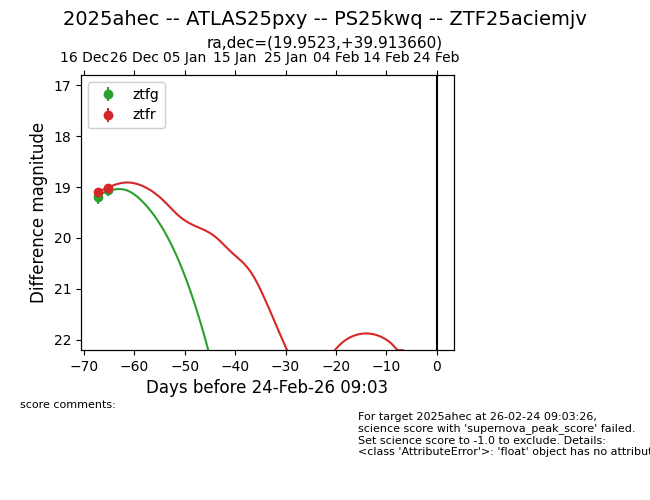
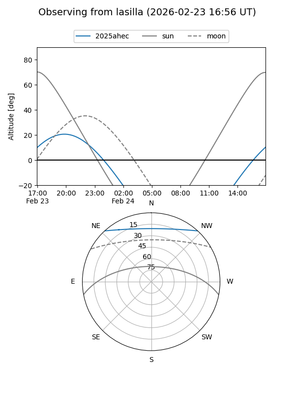
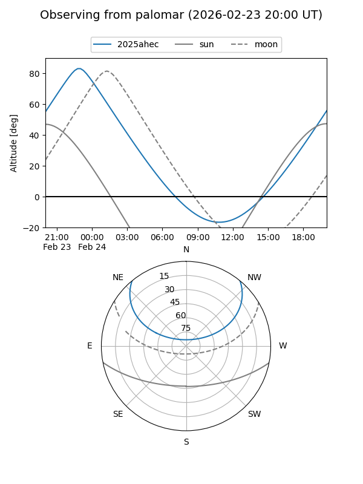
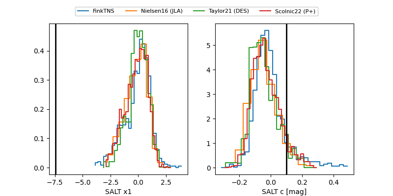

2025ahec
Target 2025ahec at 2025-12-19 05:11
Aliases and brokers:
FINK: fink-portal.org/ZTF25aciemjv
Lasair: lasair-ztf.lsst.ac.uk/objects/ZTF25aciemjv
ALeRCE: alerce.online/object/ZTF25aciemjv
TNS: wis-tns.org/object/2025ahec
YSE: ziggy.ucolick.org/yse/transient_detail/2025ahec
alt names
ZTF25aciemjv (ztf,fink_ztf)
2025ahec (tns,yse)
Coordinates:
equatorial (ra, dec) = 19.9523,+39.91366
equatorial (HMS+DMS) = 01:19:48.55,+39:54:49.17
galactic (l, b) = (128.8215,-22.63342)
Flags:
Photometry:
last ztfg=19.20
1 ztfg detections
Lightcurve

Visibility


Additional plots
